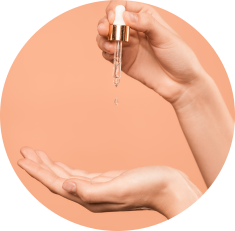

Óleo capilar:
Uso nas pontas do cabelo quando acordo e antes de dormir para proteger as pontas dos danos do dia a dia e deixar uma aparência mais sedosa.
Também costumo passar um pouco de um óleo levinho antes da máscara de tratamento, deixa um acabamento incrível!
Gosto muito do óleo de argan da Lolla, o óleo extraordinário da Elseve e do Oil Reflections da Wella.